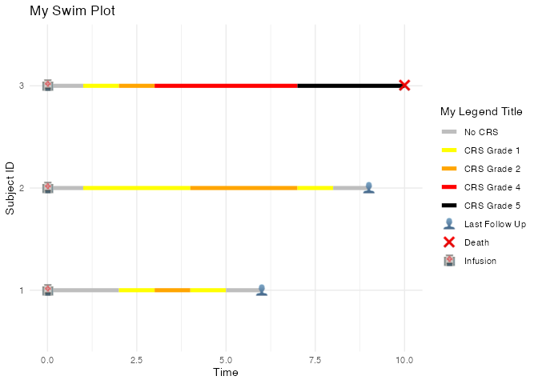

The ggswim package provides an easy set of commands to create “swimmer” plots.
Installation
You can install the development version of ggswim like so:
devtools::install_github("CHOP-CGTInformatics/ggswim")Example
Below is a simple example for how to set up your “swim table” to pass along to ggswim():
library(ggswim)
df <- tibble::tribble(
~subject_id, ~years, ~indicator_1, ~indicator_2, ~status,
1, 2000, 1, 1, "unknown",
1, 2001, 0, 0, "unknown",
1, 2002, 1, 0, "positive",
1, 2003, 0, 1, "negative",
2, 2000, 0, 0, "positive",
2, 2001, 0, 0, "negative",
2, 2002, 0, 1, "negative",
3, 2000, 0, 1, "negative",
4, 2000, 0, 0, "negative",
4, 2001, 1, 0, "positive",
4, 2002, 0, 1, "positive"
)
df_swim <- df |>
streamline(
id = subject_id,
time = years,
markers = c(indicator_1, indicator_2),
lanes = status
)
df_swim$data
#> # A tibble: 11 × 8
#> subject_id years indicator_1 indicator_2 status indicator_2_timepoint
#> <fct> <dbl> <dbl> <dbl> <chr> <dbl>
#> 1 1 2000 1 1 unknown 2000
#> 2 1 2001 0 0 unknown NA
#> 3 1 2002 1 0 positive NA
#> 4 1 2003 0 1 negative 2003
#> 5 2 2000 0 0 positive NA
#> 6 2 2001 0 0 negative NA
#> 7 2 2002 0 1 negative 2002
#> 8 3 2000 0 1 negative 2000
#> 9 4 2000 0 0 negative NA
#> 10 4 2001 1 0 positive NA
#> 11 4 2002 0 1 positive 2002
#> # ℹ 2 more variables: indicator_1_timepoint <dbl>, max_time <dbl>And then plot:
df_swim |>
ggswim(title = "Swimmer Plot", xlab = "Years", ylab = "Record ID")
#> Warning: Removed 8 rows containing missing values (`geom_point()`).
#> Warning: Removed 6 rows containing missing values (`geom_point()`).